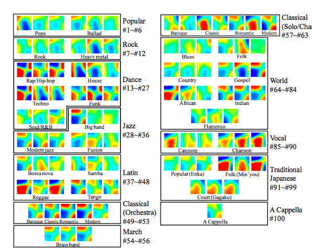
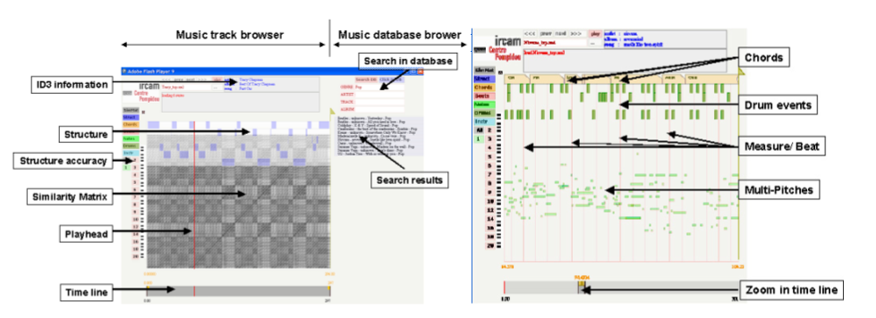
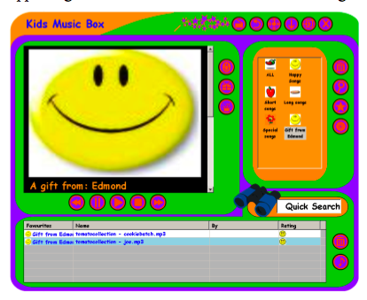

ISMIR Day 1: Plenary Session
Presentation 1
Music Thumbnailer: Visualizing Musical Pieces in Thumbnail Images Based on Acoustic Features by Kazuyoshi Yoshii and Masataka Goto.
Presenter: Kazuyoshi Yoshii
This paper presents a principled method called MusicThumbnailer to transform musical pieces into visual thumbnail images based on acoustic features extracted from their audio signals.The goal is to make it easy for users to quickly grasp music contents using visual thumbnailing. The thumbnail is related to music content. Some examples:
 Some characteristics to make good thumbnails:
- Try to maximize 'memorability' - large 'smoothness' helps.
- Large dynamic range
- Distinguishability - should be wide variety between various thumbnails
Presentation 2
MCIpa: A Music Content Information Player and Annotator for Discovering Music
Geoffroy Peeters, David Fenech and Xavier Rodet
Speaker: Geoffroy Peeters
A simple music database browser that allows you to search a large music database. A very feature-filled music track browser - the track browser presents graphically a track - it allows you to browse and search within a track. The browser includes a number of visualizations including: a scrolling piano roll. (this visualization seemed too dense to be of too much use). There's also a music structure browser that easily lets you find similar segments in a track. There's a chord progression visualization. They use automatic chord estimation - the visualizer uses folder tabs to show the current chords. This was pretty neat. There's also a beat visualizer that shows the downbeat. There's a multi-pitch visualization - this has a much more useful piano roll. There were lots of other things you can do with the track browser. You can annotate a track, add markers, labels etc. This tool is developed for professional music annotators. The track browser seems to be really useful. I'm glad I'll be able to have a closer look during the poster sessions. 
{kind=link}
Presentation 3
Development of a Music Organizer for Children
Edmond Zhang and Sally Jo Cunningham
Sally Jo is a great speaker - she presented a strong justification about why we should care about building a music organizer for children with some funny stories (kids say the darndest things). She talked about the challenges in the participatory design process with children as participants. Some observations: Current music player has "too much stuff". Adult player "too boring" - players designed for kids "too childish". Paper prototypes are useless with kids. They had to use high-fidelity prototypes - which means fewer iterations, but this led to better feedback. They solicted reviews from design experts.
Sally Jo showed some of the hi-fi prototypes. Kids really like to rate songs. They also have a parent interface made to look "as boring as possible" to discourage the kids from using it - where the parents can manage things like files and directories. Kids can give each other gifts.
Lessons - kids want less text, using the system is kind of like a game - the designers must make sure that actions are obvious and undoable. Skins important. Kids liked the games - more so than just organize the music. Next steps: get it running the the OLPC. - A great talk.

I've been dreaming for years of a way to visualize music pieces. If the Music Thumbnailer works even half-decently, this could be a major breathrough. I hope lots of providers will start using it...
Posted by Laurent on September 15, 2008 at 02:16 PM EDT #